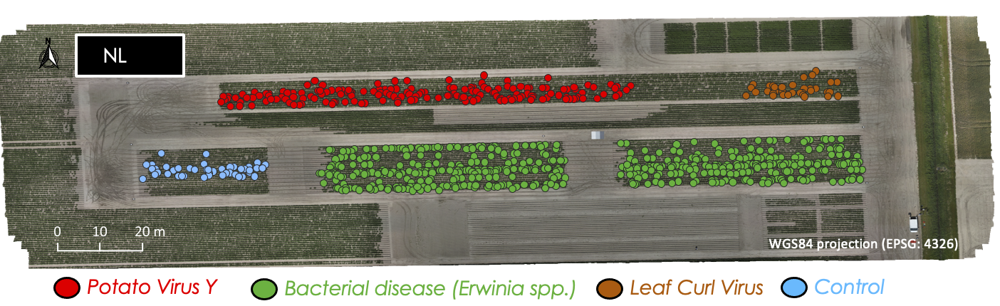
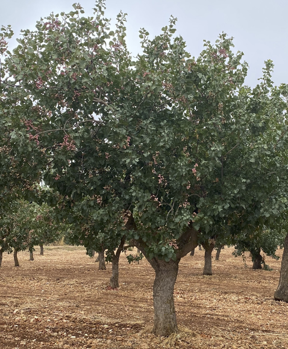
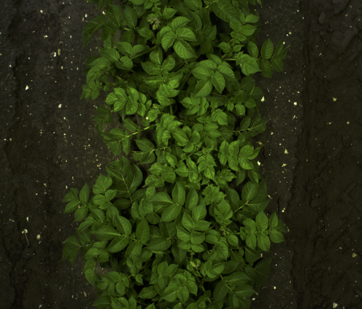
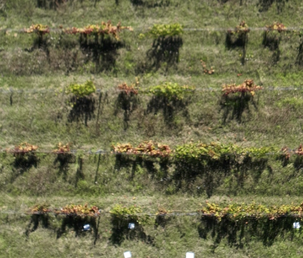
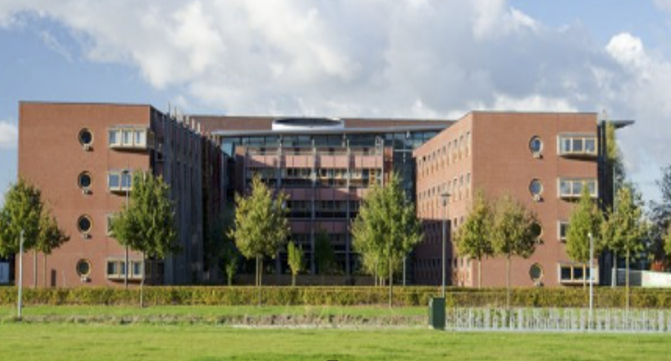
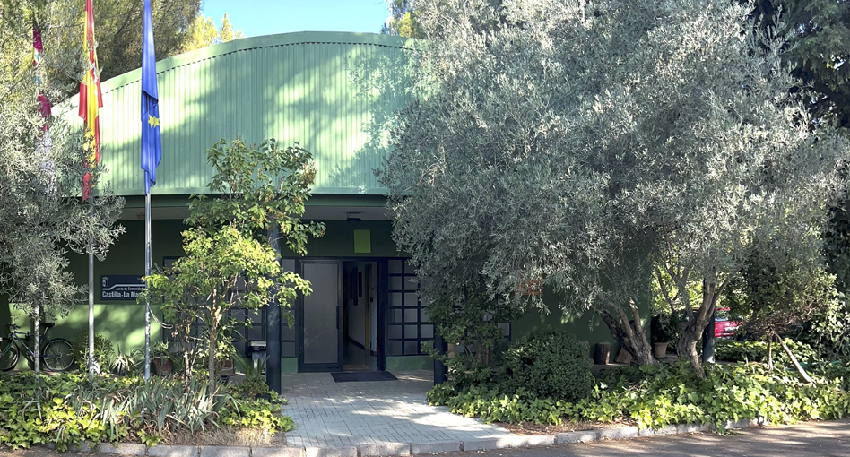
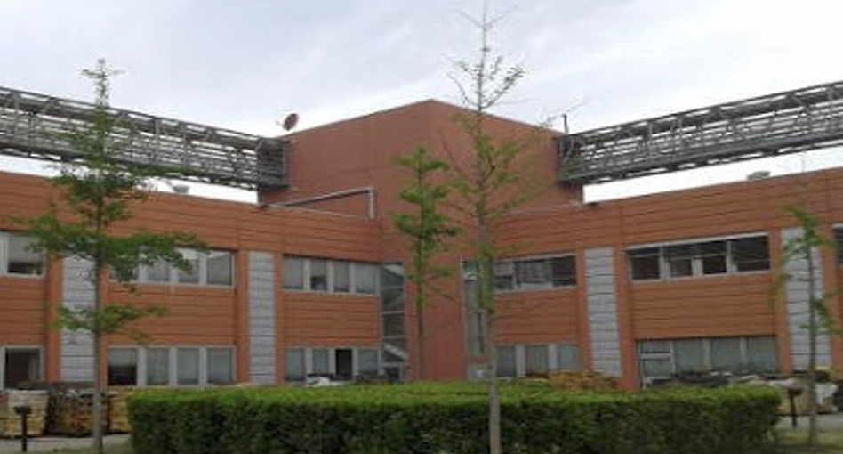

CROP MULTIPLE STRESSORS, PESTS AND DISEASES · ESA EXPRO+
Hybrid ML & Earth Observation for multi-stressor crop disease detection
HYDRA-EO develops a hybrid framework that couples radiative transfer models with
machine learning to detect and attribute crop stress from field to satellite scales,
using hyperspectral, thermal and multi-sensor EO data.
HYDRA-EO integrates UAV, satellite and RTM–ML processing for crop stress detection across studied European sites.
Project overview
Understanding crop stress across spectral and spatial scales
HYDRA-EO aims to develop and demonstrate a physics-informed, hybrid machine
learning framework for early detection and attribution of multiple stressors in
agricultural systems. By bridging leaf, canopy and landscape scales, the project
supports ESA’s Digital Twin Earth vision for crops and prepares methodologies for
upcoming missions such as FLEX, CHIME and LSTM.
The project addresses key Mediterranean and temperate crop systems (olive, citrus, pistachio,
grapevine) and develops interpretable indicators of plant health based on hyperspectral,
fluorescence and thermal data.
Multi-sensor datasets from field instruments, UAV platforms, airborne campaigns and satellite missions
are combined with radiative transfer models to retrieve functional traits related to photosynthesis,
structure and water status.

Phenotyping potato site
Our Mission
Understanding crop stress across scales
HYDRA-EO HYDRA-EO’s mission is to build an operational, multi-scale Earth Observation
framework capable of detecting, quantifying and attributing crop stress across Europe.
The project aims to bridge fundamental plant physiology with next-generation EO technologies,
enabling early warning capabilities for agriculture and supporting ESA’s long-term vision for
Digital Twin Earth.
By integrating radiative transfer modelling, hyperspectral and thermal sensing,
and hybrid machine learning approaches, HYDRA-EO seeks to deliver interpretable,
transferable stress indicators that can be deployed across different crops, environments
and sensor platforms. Ultimately, the mission of HYDRA-EO is to accelerate the adoption
of physics-guided ML in agricultural monitoring and contribute to more resilient, sustainable crop systems.
4
Core Partners
3
EU Countries
5
Crop Systems
Crop–Stressor Scenarios
HYDRA-EO focuses on four strategic crops and a palette of biotic and abiotic stressors.
Field campaigns and EO acquisitions are co-designed to capture contrasted responses
across varieties, management and climate zones.
Pistachio & Olive (Spain)
CIAG–IRIAF orchards with inoculated fungal and bacterial pathogens
(e.g. Septoria spp., Pseudomonas savastanoi) under varying water regimes
are monitored using UAV hyperspectral, thermal, and airborne-borne sensors to build
a unique multi-sensor stress dataset.
Potato (Netherlands)
Multi-stressor trials including Potato Virus Y and fungal infections in a dedicated
phenotyping trial, combining leaf measurements, biochemical analysis, UAV imaging,
and satellite observations. These experiments generate contrasted physiological
responses across varieties under plant diseases.
Grapevine (Italy)
Italian vineyard plots infected with Flavescence Dorée
and additional fungal pathogens form the primary study area, enabling the
development and validation of spectral–thermal indicators for early disease
detection in perennial cropping systems.
Alfalfa (Italy)
Alfalfa experimental plots in Italy include controlled fertiliser treatments designed
to capture a wide range of physiological responses. HYDRA-EO also investigates the
spectral and thermal signatures associated with insect pressure in alfalfa,
enabling early detection of pest-driven stress.

Pistachio – Septoria stress

Potato – fungal infection

Grapevine – Flavescence Dorée
Main Goals
Scientific objectives
HYDRA-EO develops a hybrid modelling framework that couples radiative transfer
simulations with machine learning to retrieve functional plant traits and disentangle
overlapping stress signals (drought vs. disease) across multiple EO platforms and crops.
Functional plant traits
Retrieve key functional traits
Retrieve traits such as chlorophyll content, anthocyanins, leaf area index (LAI),
biomass, water status, canopy temperature, nitrogen- and red-edge-based indices,
as well as SIF-related indicators. These traits are derived from hyperspectral,
multispectral and thermal data using PROSAIL- and SCOPE-based simulations combined with machine learning.
Stressors
Disentangle drought and disease
Separate the spectral and thermal fingerprints of drought, fungal infections, bacterial and viral diseases,
enabling early detection of biotic and abiotic stress.
This HYDRA-EO analyses how these stressors interact, overlap and evolve over time, improving
resilience assessments and supporting early warning systems in agricultural landscapes.
Scaling
Bridge scales & missions
Quantify how plant trait signals degrade from UAV and airborne hyperspectral data to satellite
missions such as Sentinel-2, PRISMA, EnMAP, FLEX, CHIME and LSTM, and design optimised bandsets
and indices for operational monitoring. HYDRA-EO develops scaling strategies that link leaf,
canopy and landscape processes, preparing methods for next-generation ESA missions.
Impact
Operational EO tools for users
Deliver open, ESA-oriented tools and Shiny interfaces that translate advanced radiative-transfer
modelling, hyperspectral–thermal analysis and hybrid machine learning into practical
decision-support applications for agronomists, advisors and policy stakeholders.
EO pipeline
Hybrid radiative transfer and machine learning pipeline
HYDRA-EO combines empirical datasets, radiative transfer models and
advanced machine learning into a single workflow, aligned with ESA’s Digital Twin Earth vision.
Field & UAV campaigns: Coordinated hyperspectral, thermal and fluorescence
measurements over alfalfa, potato, grapevine, pistachio and olive sites.
Airborne & satellite data: Integration of PRISMA, EnMAP, Sentinel-2,
FLEX-like SIF products and simulated CHIME and LSTM configurations.
Radiative transfer: Use of PROSAIL and SCOPE models for simulating reflectance
and fluorescence at canopy level under controlled trait–stressor combinations.
Hybrid ML: Random forests, gradient boosting, CNNs and Gaussian processes
trained on RTM-informed synthetic libraries and empirical observations.
Physically-based canopy simulations using the
ToolsRTM
and
SCOPEinR
R packages, developed in GitLab, to model hyperspectral reflectance, fluorescence and surface energy balance processes.
News
Announcements & disseminations
HYDRA-EO activities, public presentations and scientific outputs
are disseminated through ESA events, conferences and peer-reviewed papers.
This section highlights key milestones and communication actions.
Event · ESA Digital Twin Earth
HYDRA-EO at ESA Digital Twin Earth Open Science Meeting
The HYDRA-EO project will be presented during the
ESA Digital Twin Earth Components: Open Science Meeting 2026.
HYDRA-EO will generate peer-reviewed articles on radiative-transfer–ML inversion,
stress indicators for Flavescence Dorée and Potato Virus Y, and EO-based
disease early-warning systems.
A curated list of accepted papers, conference contributions and media highlights
will be added here as the project progresses, providing references for ESA,
national agencies and the scientific community.
Consortium
European partnership
HYDRA-EO is coordinated by Wageningen University and brings together expertise
in EO services, modelling, plant pathology, genetics and agronomy from the
Netherlands, Italy and Spain.
Wageningen University, Department of Environmental Sciences (WU-DES)
The Geoinformation Science and Remote Sensing (GRS) group leads overall coordination and WP1, WP2, WP5, WP6 and WP10.
WU-DES develops the RTM and ML core (ToolsRTM, SCOPEinR), designs the scientific workflow, and manages the central
Git and Shiny tools. Project coordination is led by Dr. Carlos Camino with scientific support from Prof. Dr. Lammert
Kooistra and colleagues.
Wageningen Environmental Research (WENR), Wageningen University & Research (WUR)
WENR leads WP8 (Scientific Collaboration) and WP9 (Promotion & Coordination), and co-leads WP6. The team specialises
in operational EO services, evapotranspiration and agricultural applications, and is responsible for outreach, stakeholder
engagement and links with ESA platforms.
Consiglio Nazionale delle Ricerche – Institute of BioEconomy (CNR-IBE)
CNR-IBE leads WP3 (Development & Validation), WP4 (Experimental Dataset Generation) and WP7 (Scientific Roadmap).
The group coordinates Italian alfalfa and vineyard campaigns, hyperspectral validation and scaling studies, and
contributes to trait retrieval modelling and the long-term scientific roadmap for ESA missions.
Chaparrillo Agro-Environmental Research Center (CIAG-IRIAF)
CIAG-IRIAF co-leads WP2 and is responsible for pistachio and olive trials in WP4. They provide experimental orchards with
controlled inoculation of fungal and bacterial pathogens, conduct UAV and aircraft-borne campaigns, and integrate agronomic,
spectral and genetic data to support stress disaggregation and resilience studies.

Wageningen University & Research (WUR)

Chaparrillo Agro-Environmental Research Center

Consiglio Nazionale delle Ricerche – Institute of BioEconomy Center
Open tools
Open-source ecosystem for trait retrieval
HYDRA-EO builds on existing open-source ecosystems developed by the GRS group at Wageningen University
and extends them with ESA-funded modules for plant trait retrieval and stress detection.
ToolsRTM (R package)
A radiative transfer modelling toolbox maintained by WU-DES for PROSAIL-based simulations,
spectral resampling, LUT generation and hybrid inversion. HYDRA-EO will add new routines for
trait–stressor libraries, band reduction and thermal integration.
An R interface for SCOPE-style energy-balance and SIF simulations, used to produce consistent
reflectance, fluorescence and thermal datasets for crops under varying stress and illumination
conditions.
A central Git repository will host the HYDRA-EO pipelines: RTM code, ML models, spectral libraries,
trait–stressor metadata and Shiny applications. ESA and project partners will have access for
collaboration, reproducibility and long-term reuse.
An interactive web application will allow users to explore retrieval workflows, visualise scaling
effects, and test different sensor configurations and bandsets for specific crops and pathogens.
Tutorials & example code
Start experimenting with HYDRA-EO workflows
Short, reproducible snippets to explore the HYDRA-EO workflows with
ToolsRTM and SCOPEinR. You can copy, paste
and adapt them in your own R scripts or RStudio projects.
R · ToolsRTMShiny applicaiton for different RTMs
Show code
library(ToolsRTM)
# Launch Shiny simulators for different RTMs
ToolsRTM::get.simulator(app = "SCOPE")
ToolsRTM::get.simulator(app = "getLUT")
ToolsRTM::get.simulator(app = "PROSAIL-BRDF")
# Type ?get.simulator to see more options
R · ToolsRTMBasic PROSAIL simulation
Show code
library(ToolsRTM)
#Get default PROSAIL input list
inputs <- ToolsRTM::inputsPROSAIL
# 2.2 Generate a LUT with 100 samples
set.seed(1234)
LUT <- as.data.frame(ToolsRTM::getLUT(inputs = inputs, nLUT = 100, setseed = 1234))
# Summarise min–max per parameter
lut_ranges <- data.frame(
Parameter = names(LUT),
Min = round(sapply(LUT, min, na.rm = TRUE),3),
Max = round(sapply(LUT, max, na.rm = TRUE),3)
)
# Display in an interactive datatable
DT::datatable(
lut_ranges,
caption = "Ranges of sampled input parameters in the LUT",
options = list(pageLength = 10)
)
# DGet soil profile
rsoil.dry <- ToolsRTM::dataSpec_PDB$dry_soil
rsoil.wet <- ToolsRTM::dataSpec_PDB$wet_soil
psoil <- 0.5
rsoil.default<- c(psoil*rsoil.dry+(1-psoil)*rsoil.wet)
wl_grid <- 400:2500 # wavelength grid in dataSpec_PDB
#Simulate PROSAIL (foursail) for each LUT row
sims <- lapply(seq_len(nrow(LUT)), function(i) {
out <- suppressMessages(ToolsRTM::foursail(
inputLUT = LUT[i, ],
rsoil = rsoil.default,
LeafModel = "PROSPECT-PRO",
spectrum.all = TRUE
))
# out has rdot, rsot, rddt, rsdt; combine to BRF using solar zenith (tts)
brf <- ToolsRTM::Compute_BRF(
rdot = out$rdot,
rsot = out$rsot,
tts = LUT[i, "tts"],
data.light = ToolsRTM::dataSpec_PDB
)
# Return tidy tibble for this run
tibble(run = i, wl = wl_grid, rho = as.numeric(brf))
})
HYDRA-EO is currently in preparation for the ESA Kick-off meeting.
For questions regarding the project, collaboration opportunities,
datasets or technical details, please contact the project coordinator
at Wageningen University & Research.
Project coordination
Dr. Carlos Luis Camino González
Geo-Information Science and Remote Sensing (GRS)
Wageningen University – Department of Environmental Sciences (WU-DES)
Wageningen, The Netherlands